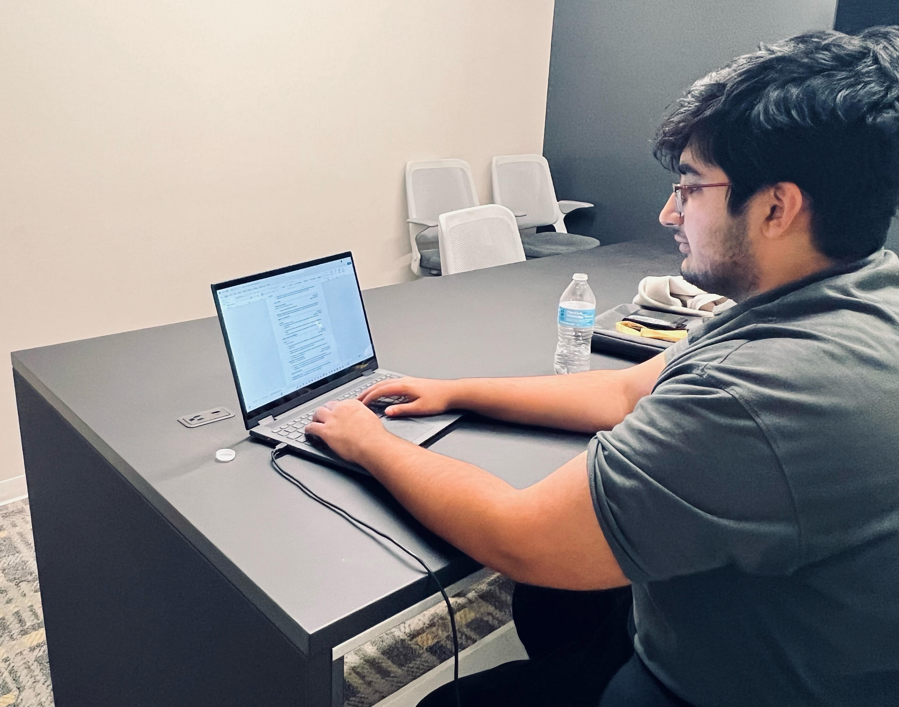

About Resume Elevate
Learn more about how we're building a smarter way to manage and generate resumes.
The first step is to check out our Resume Generator. There you will asked a number of questions that will be improved and used to build your resume. Relate wants to make sure that the resume is tailored to your profession and that this resume acts as an extention of your interview.
Template Selection
The next step is to select the template that looks the best to you. Relate plans to have a
variety of templates for each profession that will make your resume style a little more
unique. After you pick your favorite, we'll load you up to our Editor for the chance to
further develop your resume.
Resume Editor
The final process is to modify your resume to fit your needs. While we are confident that your resume is looking great, it doesn't hurt to add any final touches or changes. You're free to add what you want from images and shapes, to colors and text decoration. Our most useful feature is our AI assitant. Waiting patiently, it will help you with your edits and will suggest improvements that would make for a great addition to your resume.
And thats it! Whether you want gorify your resume or spin one up quickly for that job down the street, Relate is built for an easy and professional resume building experience. Don't forget to export your document, and come by anytime you want to spice up your interview!
Our Vision
 ResumeElevate is designed to help users create professional resumes effortlessly. Our goal is to create a platform that not only allows users to generate resumes but also provides tools for secure login, seamless updates, and document management, all integrated with powerful backend technology.
Technologies We're Using
Node.js & Express
Our backend is built with Node.js and Express to provide a fast, scalable, and secure environment for handling user data and dynamic content.
MongoDB & Mongoose
We use MongoDB as our database, and Mongoose for managing schema and data relationships, ensuring that user data is stored securely and efficiently.
Bootstrap
The front-end of the website is powered by Bootstrap, offering a responsive, mobile-first layout with a sleek and modern design.
Project Overview
This project is built to deliver a seamless user experience. Below are the steps involved in the development of the platform:
- Designing a responsive, multi-page website using HTML, CSS, and Bootstrap for aesthetics and user interaction.
- Implementing secure authentication features with password encryption and user sessions using Node.js and Express.
- Building a dynamic connection to MongoDB for managing user data, resume details, and other content with the help of Mongoose.
- Creating a resume generation tool that allows users to generate and download resumes in real-time.
- Ensuring data security and integrity by implementing best practices for database interactions and backend development.